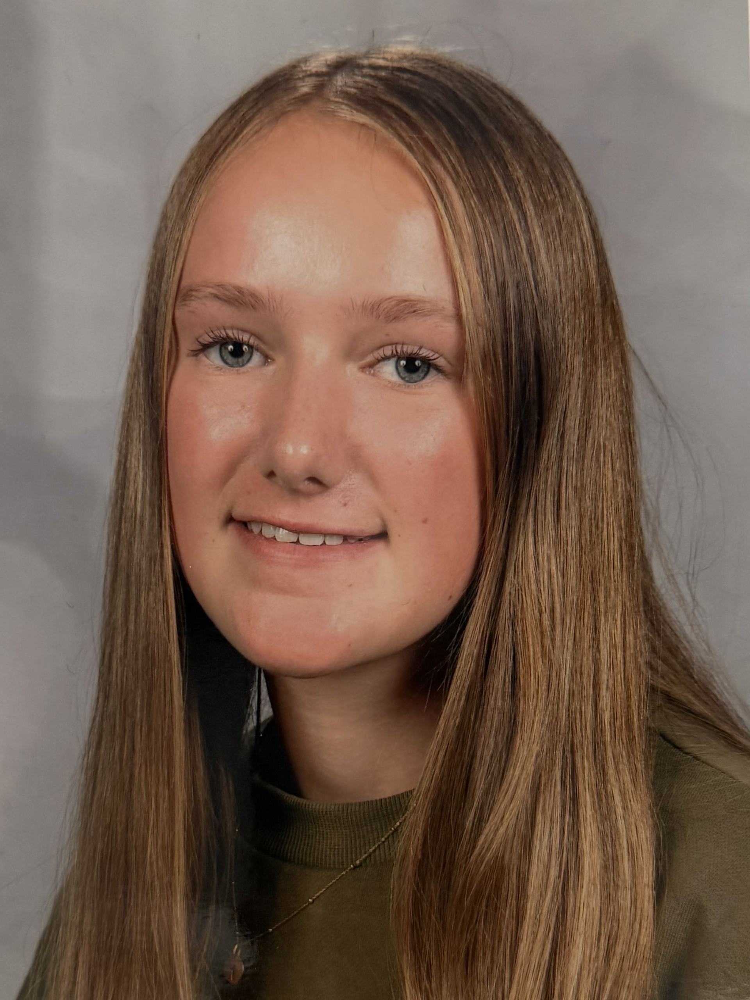

CV Blanche Jacqz, orthophoniste

EXPERIENCE PROFESSIONNELLE
Stage d'observation de 2nd : Février 2026 - IEM Dabadie
J'ai découvert les métiers de Psychologue, Orthophoniste et Psychomotricienne
Stage d’observation de 3ème : Octobre 2024 – BZB
J’ai pu découvrir tous les métiers de l’équipe produits de BZB
COMPETENCES
- A l’Ecoute
- Minutieuse
- Souriante
- Responsable
PROFIL PROPESSIONNEL
Je suis une élève de seconde général au lycée La Salle a Lille
EDUCATION
Collège – 2021-2025 :
Jeanne d'Arc, Roubaix
Brevet des collèges 2024-2025 Mention bien
ASSR1et2
Certification PIX
Lycée – depuis septembre 2025 :
La Salle Lille
Seconde générale
Options anglais, espagnol
Certification PIX
LOISIRS /INTERETS